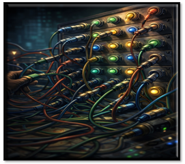
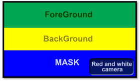
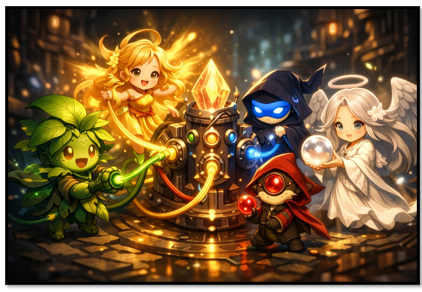

~6 Understanding Node Connectors in DaVinci Resolve ~
~A Visual Mnemonic Guide~
7/6/2026

Key Tips:
- Hover: Hovering your mouse over a connector in Fusion will often display what it does in the lower-left corner.
- Swap: In Fusion, you can press Ctrl+T (or Cmd+T) to swap the yellow and green inputs on a Merge node.
- Connectors: If you right-click on the output and drag it, Resolve will show you all valid inputs

Green – Foreground: “The green plant in the foreground.”
Yellow – Background: “The yellow sunlight that fills your background.”
Blue – Mask: “The blue, masked spirit who can hide, or make visible what you see.”
Red – Record: “The red imp who captures the moment.”
White – Viewport: “The white angel who reveals the image.”

In the end, node connectors aren’t just colored dots on a Merge node — they’re the language that tells your composition who stands in front, who fills the world behind, and what magical shape defines the final result. Once you understand what each color represents, the entire Fusion workflow becomes clearer, faster, and far more intuitive. And with a little help from our whimsical cast of node spirits, you’ll remember these roles long after the tutorial ends. Let them guide you as you continue your journey into the world of nodes.